沁心女装以千问办公AI为核心，将25年积累的选品眼光、搭配逻辑与客户关系管理能力全面数字化，在AI导购、旧衣新搭、客户运营、内容营销四大场景落地，以一人之力实现了"永不打烊的闺蜜式服务"。
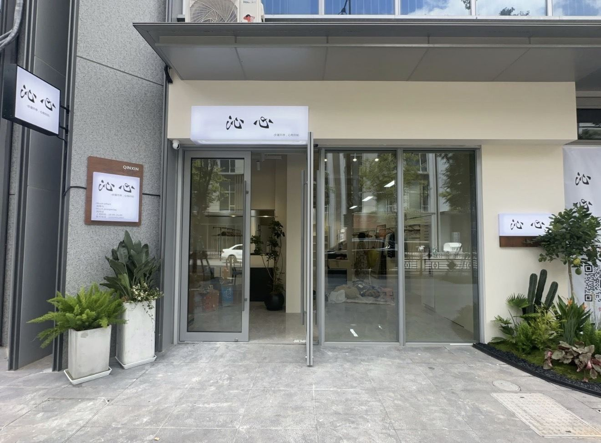
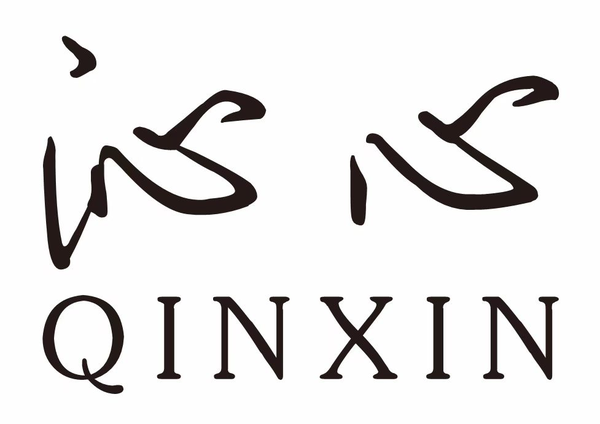
沁心女装成立于2025年，是一家聚焦30–55岁品质女性客群的线下主理人品牌，由拥有25年服装行业经验的主理人沁心创立，致力于以AI为核心工具，将专家级选品与搭配经验系统数字化，重新定义"闺蜜式"私域服务模式。
公司围绕AI智能导购、旧衣搭配、客户数据沉淀、内容生产四大核心场景，以一人门店为运营主体，为客户提供覆盖首次触达到长期复购的全周期精准服务，助力实现服务能力突破天花板。
沁心女装成立于2025年，是一家聚焦30–55岁品质女性客群的线下主理人品牌。沁心女装以千问办公AI为核心，将25年积累的选品眼光、搭配逻辑与客户关系管理能力全面数字化，在AI导购、旧衣新搭、客户运营、内容营销四大场景落地，以一人之力实现了"永不打烊的闺蜜式服务"。
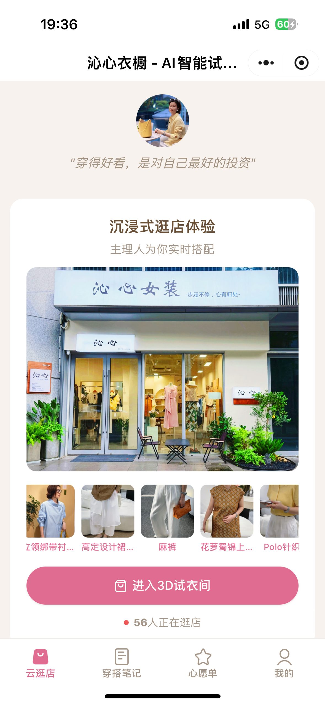
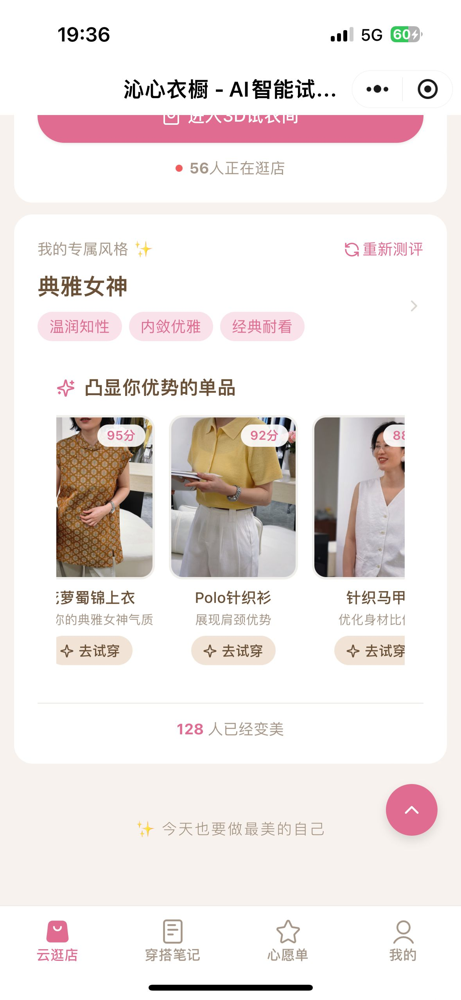
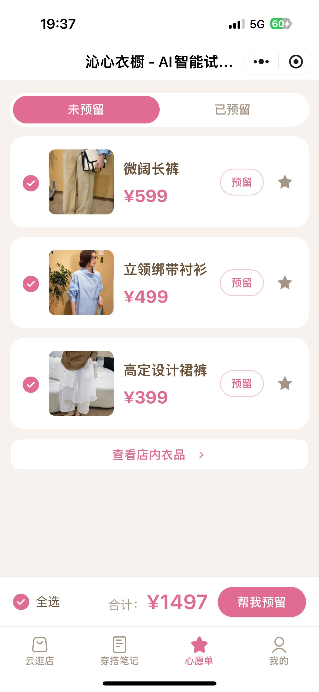
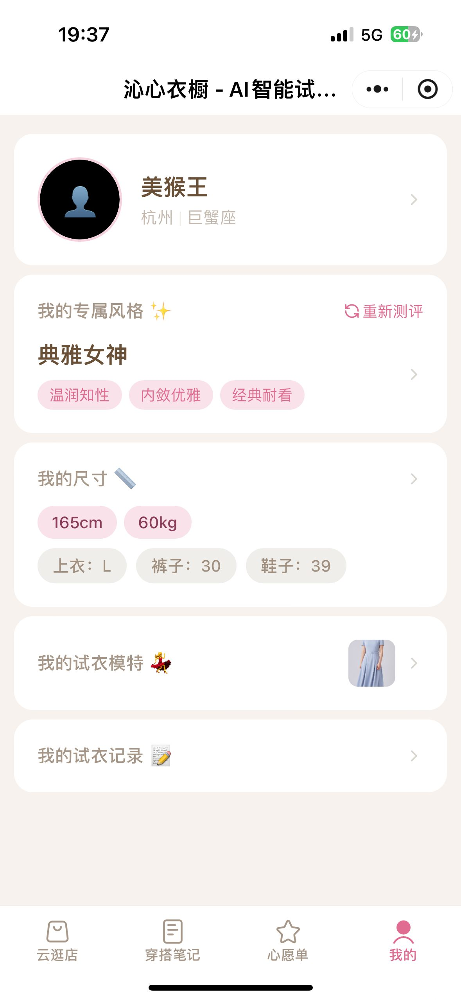
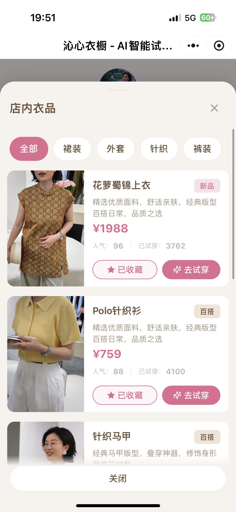
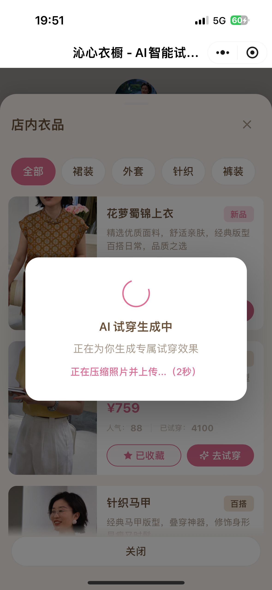
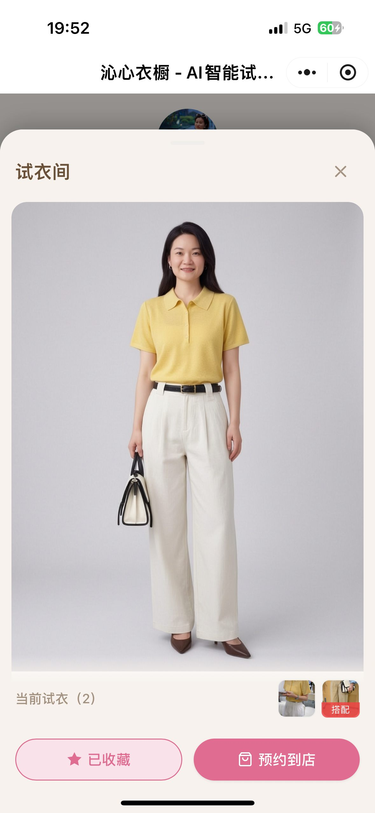
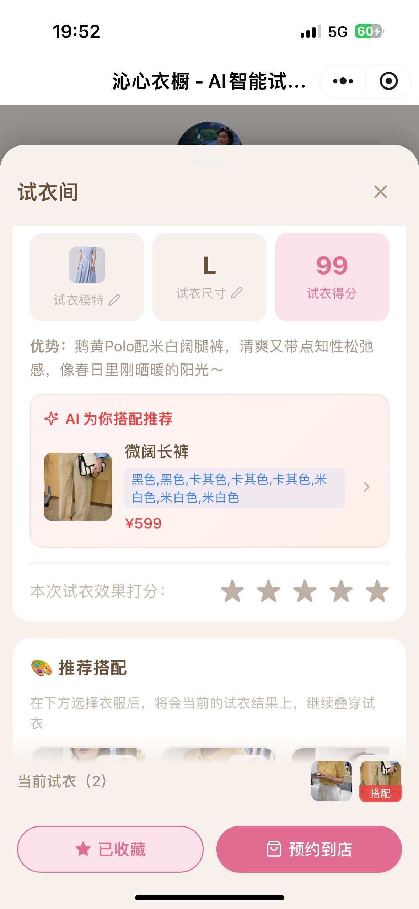
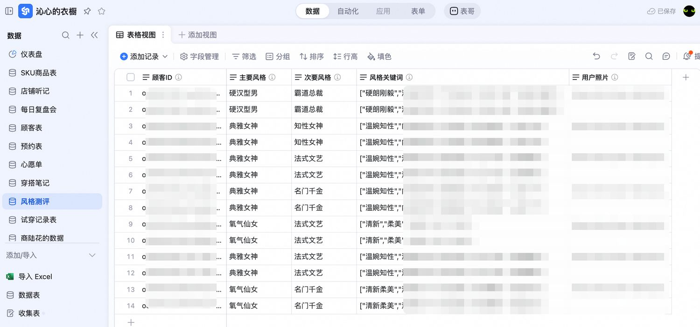
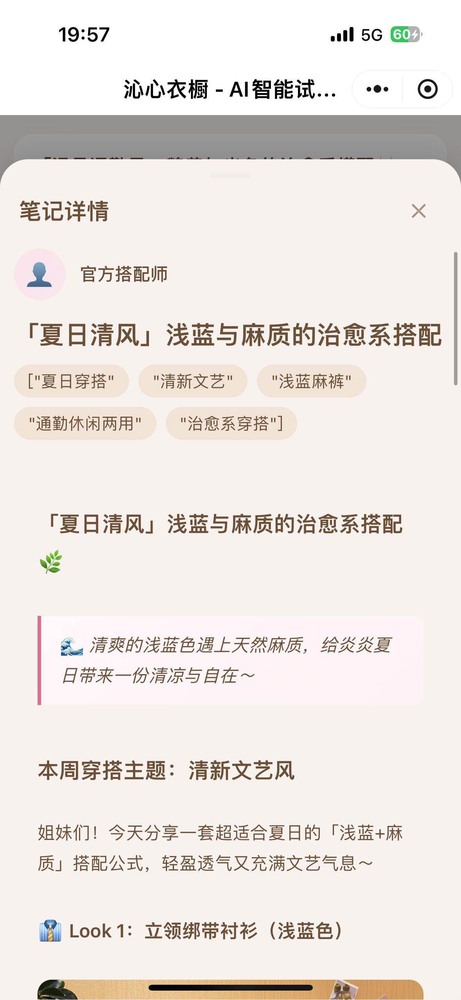
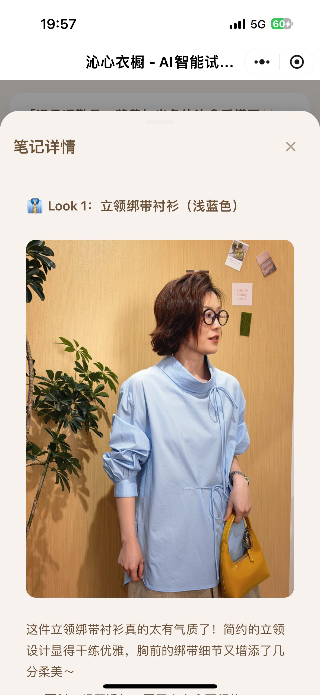
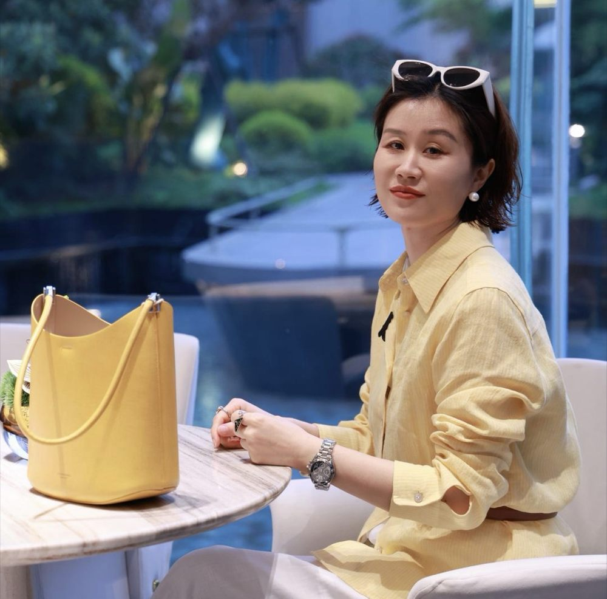
我做了25年服装，见过太多人追风口、追流量，最后什么也没留下。真正留下来的，是你和客户之间的信任。现在千问办公帮我做到了一件事——把这份信任数字化了。它不是冷冰冰的推荐算法，它是线上的我，是另一个沁心。